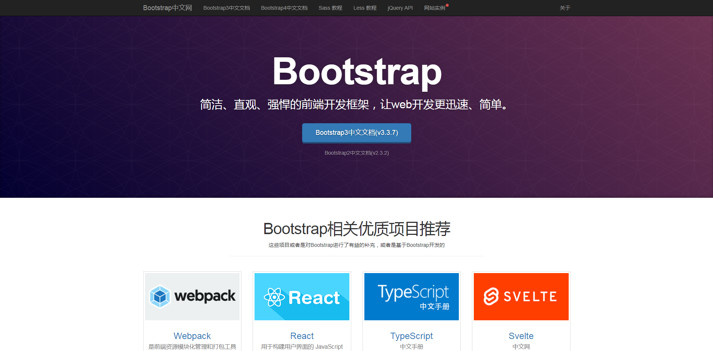
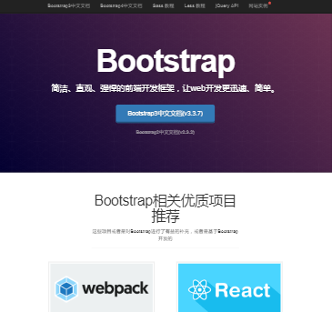
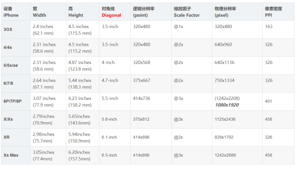

很久很久以前，在适配移动端的时候，第一次听到viewport这个概念。
只知道一股脑儿复制：
当时不知道是什么意思，查了几篇文章后未果。
近期好好读了远古时期介绍viewport的博客，准备对这个概念做一个梳理。
博客文章地址：A tale of two viewports — 1
没有找出关于viewport的标准定义，以下内容是结合了该博客viewport概念系列的一家之见。
meta中的viewport
meta中的viewport有几个键值对，写在content里：
initial-scale=n：初始缩放值，n为一个数值。width=[device-width/n]：宽度，值可以为device-width或n，n为CSS像素值。user-scalable=[yes/no]：是否允许用户缩放。maximum-scale=n：最大缩放值，n为一个数值。
viewport可分为三种：
layout viewport，该概念与html元素的宽度相似，对应meta中的viewport。visual viewport，对应可见的viewport，即可见视窗，能看见的范围。（虚拟概念）ideal viewport，直译过来是：理想情况下的viewport。（虚拟概念）
个人认为虚拟概念只是方便理解的，实际上不存在，归根结底还是对DOM的操作，以及可见范围（视窗）的缩放。
为PC端开发的网页在移动端上显示的话，由于设备的尺寸原因，绝大多数移动端的浏览器按照桌面端的显示方式显示网页肯定显示不全，所以移动端增添了viewport这一概念，使得在移动端上也能单屏展示一个网页。
如下图，同一个网页不设置viewport时，在桌面端和移动端上的显示效果：


可以看出一个明显的区别：移动端的网页明显被缩小了，且document.documentElement.clientWidth为980px，不同浏览器、手机的值都不一样，该值可以看成layout viewport的值。
这种情况下，需要用户手动放大，才能完全看清楚内容，
那么，如果我们想解决移动端缩小网页（或者说强行设置viewport）的问题的话，就可以使用meta中的viewport了。
设置：
1 | <meta name="viewport" content="width:device-width,initial-scale=1.0"> |
说明不对viewport进行缩放，该值可以认为是ideal viewport的值，可以从screen.width或window.innerWidth获得。
简而言之，这就是移动端设备的物理像素宽度，这个设备有多大，就显示多大的区域。
设置之后效果如下：
这时候再获取一下document.documentElement.clientWidth就为320px了。
所以对viewport的设置实际上可以看作是改变了document.documentElement.clientWidth的值。
总的来说
浏览器一屏到底显示多少内容。而显示多少内容取决于网页的大小，即html元素的大小，移动端只是自动设置了一个值（例如width=980px）或者缩放（例如initial-scale=0.5），使得一个375px的屏幕可以显示更多内容。
网页中的缩放
在PC端中缩小一个网页，会导致网页内容变得越来越小，而观察document.documentElement.clientWidth/clientHeight，则会发现该值越来越大从而导致网页内容越来越小；而放大也是如此。
在移动端中缩放一个网页和PC端的情况类似。而不设置viewport的宽度，则会导致网页内容被缩小，所以我们可以认为：移动端的浏览器自动地为网页设置了一个缩放值，从而在一个物理像素中显示了更多的CSS像素。而我们设置viewport所做的只是将缩放值调回正常缩放而已。通过width=device-width或initial-scale=1.0都可以办到这一点。
而visual viewport的概念，顾名思义就是视野，当前窗口能显示的网页区域。当放大网页时，会出现左右滚动条，网页内容显示不全，需要拖动滚动条来浏览全部区域。所以visual viewport的大小绝对小于等于layout viewport（或者说是html元素）的大小。
该网址可以体验这个效果：Viewport visualization app ALPHA
关于DPR（devicePixelRatio）
以上内容都围绕着html元素的大小说明viewport，未提及像素的概念。
DPR的定义：设备物理像素(physical pixels) 与 设备无关像素 (device-independent pixels (dips))的比值，devicePixelRatio = physical pixels / dips。
物理像素即设备的像素，实际能显示的像素个数。
设备无关像素称作逻辑像素，即CSS像素。
通过window.devicePixelRatio获取。
对网页的缩放，实际上是改变了物理像素和CSS像素的比例：
- 用更多的物理像素表示CSS像素，意味着看起来更大，即放大。
- 用更少的物理像素表示CSS像素，意味着看起来更小，即缩小。
如果DPR>1，即使用多于1个的物理像素表示1个CSS像素。
如果DPR=1，即1个物理像素表示1个CSS像素，那么就相当于将initial-scale设置为小于1的值。

上图是移动端设备有关于像素的值，可以看到逻辑分辨率和物理分辨率两列，其实就对应逻辑像素（CSS像素）和物理像素。而设置initial-scale=1就相当于把layout viewport设置为逻辑分辨率的宽度而已。
由于物理分辨率的数值普遍大于逻辑分辨率的数值，我们可以认为移动端的设备显示的单位的尺寸更小，因而用更多的像素去显示同一个图形（即DPR越大），会显得更细腻。
总的来说
DPR越大意味着物理分辨率与逻辑分辨率的差值越大，像素密度越大，代表相同尺寸的屏幕可以显示更多的内容（内容看起来被缩小了）。